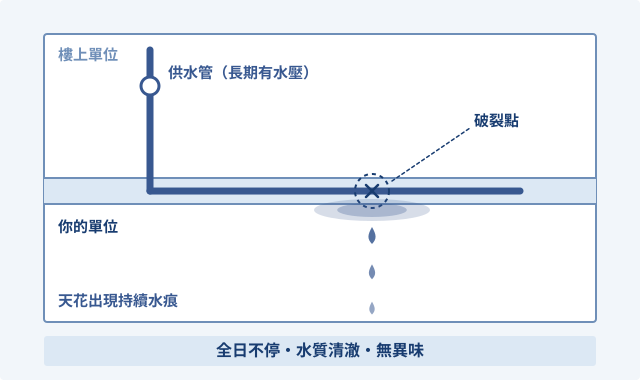
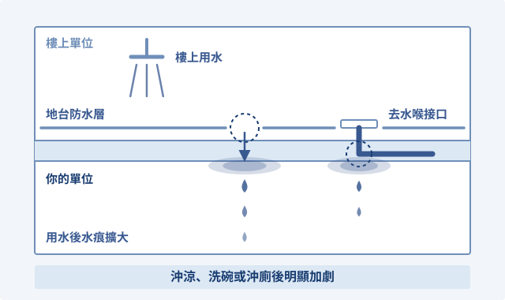
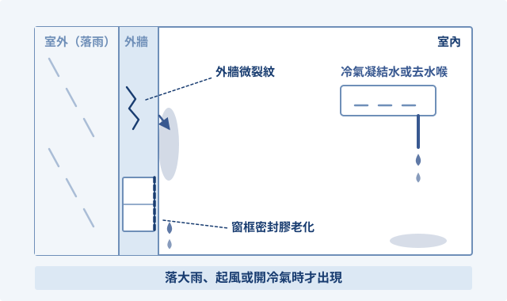

全日持續滲水、水質清澈
可能源頭單位內或樓上供水管（淡水／再生水喉）破裂。

自測方法（水錶測試）
關閉屋內所有水龍頭，記低水錶讀數並靜置 30 分鐘。如無用水但水錶指針仍有轉動，即供水管有機會滲漏。
可能源頭單位內或樓上供水管（淡水／再生水喉）破裂。

關閉屋內所有水龍頭，記低水錶讀數並靜置 30 分鐘。如無用水但水錶指針仍有轉動，即供水管有機會滲漏。
可能源頭去水管、排污喉破裂，或地台防水層破損。

分日、逐一向淋浴間、洗手盆或座廁倒入食用色水並慢放清水沖洗。若樓下滲出對應顏色的水跡，即可鎖定該處去水喉出事。
測試前請先取得樓下住戶同意配合觀察。可能源頭外牆微裂紋、窗框密封膠老化、天台防水層失效或冷氣喉凝結水。

在滲水邊緣用鉛筆或膠紙做記號，記錄下雨、起風或開關冷氣的時間點，觀察水痕有否即時擴大。
自測只供初步定位。若滲漏持續或牽涉鄰里協調，按你的情況揀一條：
適合：協調困難，或需要政府跨部門介入協調。
官方電話：2859 4875
前往官方網站適合：源頭明確，但鄰居拒絕維修或不准入屋檢查。
了解《樓宇滲漏水爭議的必要仲裁》法定程序唔想煩，唔想拖，唔想走冤枉路，就搵專業人士協助。
適合：資料零散、多方各執一詞，或者不知道下一步應該點行。
如果官方流程看不懂、不知道如何與鄰居及管理公司溝通，我們可協助你釐清責任與下一步：
下一步
宇見陪你整理資料、比較途徑，再決定下一步。
聯絡宇見U VISION CONSULTING
可用 WhatsApp、電話或電郵聯絡。請先講滲漏位置、發生時間及你想釐清的問題；文件與相片可在聯絡後再商議提交。
Contact us via WhatsApp, phone or email. Tell us about your proposed service and the questions you want clarified; there is no need to send identity documents or full business records at this stage.

用 +853 6679 8555 搜尋加入，或按 QR Code 放大掃描。
Find us using +853 6679 8555 or open the QR code to scan.

 WhatsApp · +853 6679 8555
WhatsApp · +853 6679 8555 Facebook
Facebook Instagram
Instagram Threads
Threads